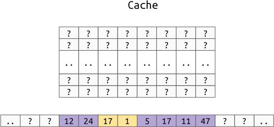

Memory Locality¶
The way objects are arranged in memory can have a dramatic impact on the performance of a program. This is because, somewhat surprisingly, not all memory accesses are equivalent. Putting related data near each other in memory is very convenient as a programmer, like with arrays and structs; therefore, hardware has been optimized for this use case.
Cache Hierarchy¶
Remember, electricity can move about 1 foot in a nanosecond, so as we add more and more physical locations to store memory, the device grows in size and complexity so it takes more time to access the memory. The solution to this is simply to maintain smaller copies of the memory closer to, or on the CPU itself. Putting the data physically closer makes them much faster to access than normal memory.
The names for these caches start with L1, which is the smallest and fastest
level, and grow upwards like L2 and L3. Most computers only have 2 or 3
levels total. There is also a special term LL which refers to the largest
and slowest level, regardless of how many levels exist on the particular device.
For example, on an Intel Core i7-6600U, there are 3 cache levels:
L1: 64KiB (split 32K data and 32K instructions)L2: 256KiBL3: 4096KiB
This is expected to be a very small fraction of the total main memory. On my computer, I have 16GiB of main memory, which means that, as a fraction of my total memory, the levels can store:
L1: \(1/262144\)L2: \(1/65536\)L3: \(1/4096\)
Propagating Values¶
The way the cache works is that instead of reading memory in units of one byte, memory actually gets read in larger chunks called a “cache line”. Modern processor use a cache line size of 64 bytes, or some power of 2 around that size. Whenever you want to read data, you actually grab the value along with a little bit of the data around it.
For example, assuming a cache line size of 8 bytes (instead of the normal 64), let’s say we want to read the yellow 2 byte value:
In Instead of just moving this two byte value to the cache, we move the entire cache line that the value is in to the cache:

Notice that this doesn’t pull evenly from both sides of the value, instead, it just treats each multiple of the cache line size as one atomic unit.
Note
Remember when we defined the struct:
{
int32 a;
int8 b;
int16 c;
}
The 6th byte was unused for performance reasons. One reason to keep the
values aligned, is that you don’t want to run the risk of having the two
bytes of c in different cache lines.
Performance Impact¶
To show the impact first hand, you can time a simple function which loops through an array touching every element in different orders.
On my Intel Core i7-6600U, touching 1000000 int64 (8 byte values) takes:
-------------------------------------------------------------------
Benchmark Time CPU Iterations
-------------------------------------------------------------------
bench_random_access 49937987 ns 49752328 ns 15
bench_forward_linear_access 12688049 ns 12675668 ns 55
bench_reverse_linear_access 13032238 ns 13019142 ns 54
Note
This timing does not include the generation of the random numbers. The source
is in benchmarks/c++/bench/memory_order.cc.
This shows that traversing a real array in random order is almost 5 times slower than traversing the same array in linear order.
Multi-Dimensional Arrays¶
Remember that we have some choices for how we lay out multi-dimensional arrays in memory. For 2d arrays, we can either use:
Row Order:

Column Order:

As you can see, this affects which values are closer to each other in memory, which we now know affects performance.
Example¶
Given a 2d array of shape (10000, 10000), think about which orientation would be best for:
- sum the columns (sum along axis 0)
- sum the rows (sum along axis 1)
- sum the whole array
In [1]: import numpy as np
In [2]: row_major = np.random.random((10000, 10000))
In [3]: column_major = row_major.copy(order='F')
In [4]: %timeit row_major.sum(axis=0)
60.8 ms ± 984 µs per loop (mean ± std. dev. of 7 runs, 10 loops each)
In [5]: %timeit row_major.sum(axis=1)
44.9 ms ± 431 µs per loop (mean ± std. dev. of 7 runs, 10 loops each)
In [6]: %timeit column_major.sum(axis=0)
47.4 ms ± 2.26 ms per loop (mean ± std. dev. of 7 runs, 10 loops each)
In [7]: %timeit column_major.sum(axis=1)
61.3 ms ± 460 µs per loop (mean ± std. dev. of 7 runs, 10 loops each)
In [8]: %timeit row_major.sum()
42.9 ms ± 417 µs per loop (mean ± std. dev. of 7 runs, 10 loops each)
In [9]: %timeit column_major.sum()
42.1 ms ± 304 µs per loop (mean ± std. dev. of 7 runs, 10 loops each)